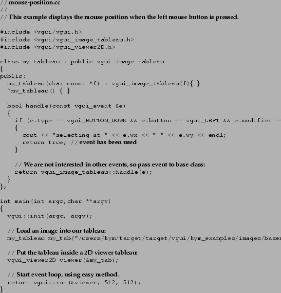

A nicer way to add a line to an image is to use rubberbanding. VGUI contains a rubberbanding tableau (vgui_rubberbander) which takes a vgui_easy2D as its child. This next example allows the user to select either a line, circle or polygon to rubberband. 